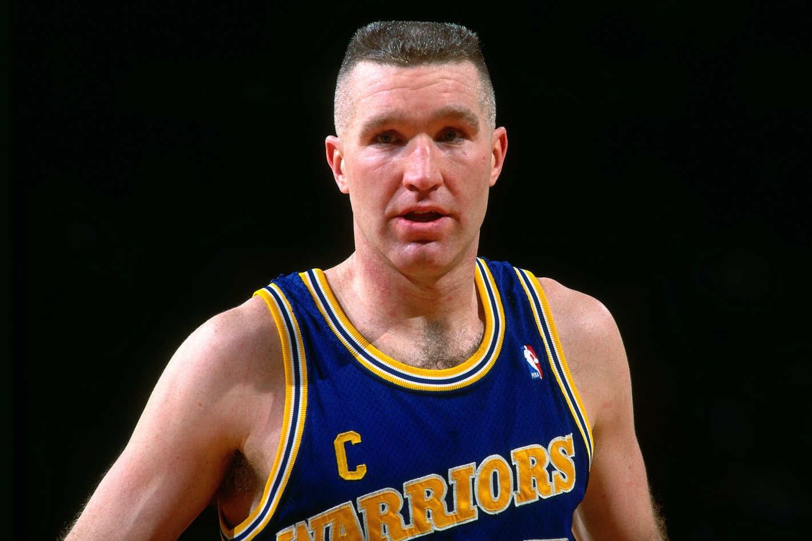
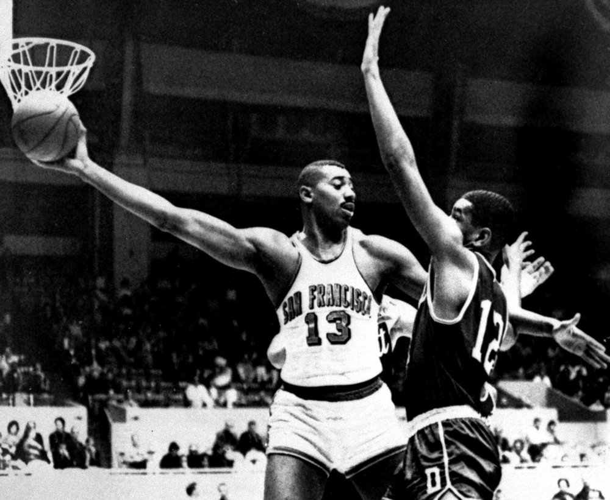
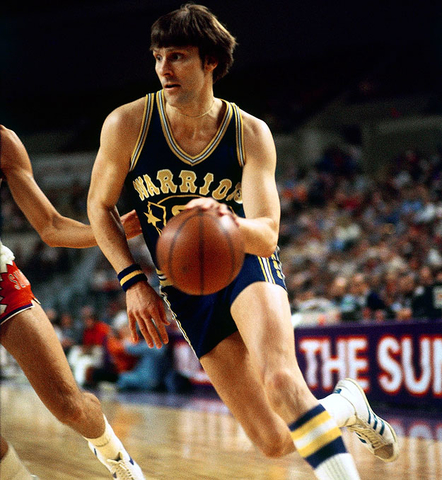
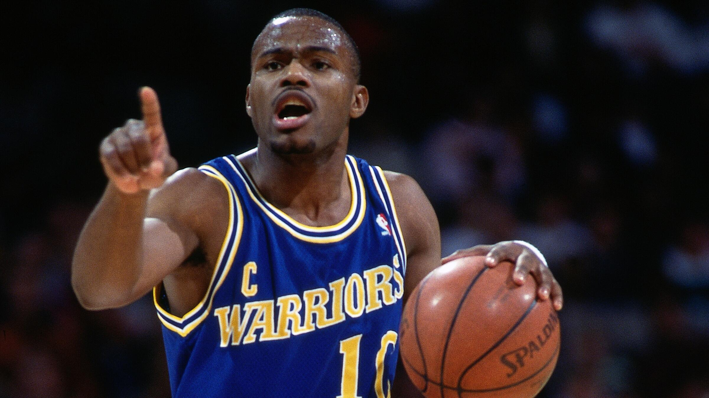

No one has every appeared in more games wearing a Warriors jersey than Chris Mullin. During a five-year period, the Warriors' small forward averaged 25.8 points, 5.6 rebounds, 4.1 assists, 1.9 steals and 0.7 blocks on 52.3 percent FG shooting and 87.1 percent FT shooting. Mullin was able to lead the Warriors to five playoff appearances along side his "Run TMC" teammates and without them.

Wilt Chamberlain is considered to be one of the greatest basketball players to live. In each of the five full seasons he spent with the Warriors (and his sixth season in which he was traded), Chamberlain won the NBA scoring title. He won the rebounding title in four of those seasons and led the league in shooting percentage in three of them. Additionally, Wilt Chamberlain holds the title for the most points scored in a game, with 100 points in a 169-147 win against the New York Knicks.

Rick Barry was the definition of clutch. The 25.7 PPG, 7.3 RPG, 5.1 APG, 2.3 SPG and 91.0 FT percentage he averaged during his eight seasons with the Warriors were great, but the 28.2 PPG, 5.5 RPG, 6.1 APG, 2.9 SPG and 91.8 FT percentage he averaged during the playoffs to the 1975 championship was spectacular.Barry was an All-Star in each of the eight seasons he played for the Warriors and an All-NBA player in six of them.

During the first five years of his career, Tim Hardaway averaged 20.5 points, 3.8 rebounds, 9.6 assists and 2.0 steals with a 45.8 FG percentage. He made one All-Rookie team, three All-Star teams, two All-NBA teams and was, after John Stockton, the premier PG in the league.

Stephen Curry might one day go down as the greatest Warrior to ever put on the jersey. Within his 8 years in the NBA, and spending all 8 with the Warriors, Curry has averaged 22.8 ppg, 6.8 apg, 4.4 rpg, and 1.8 spg. With 2 NBA championships alongside his 2 MVP trophies, Curry is a once in a generation type of player. Curry holds the record for most three pointers made in a season (402).
(June 8th, 2017) One of the greatest moments in Warrior's history is when superstar Kevin Durant buried the go-ahead three on Lebron James to a 3-0 lead on the Cavaliers.
(January 23rd, 2015) Klay Thompson sets the record for most points scored in a quarter by burying shot after shot, totaling 37 points in the 2nd quarter against the Sacramento Kings.
(April 14th, 2016) "The Human Torch" or "Baby-Faced Assassin" Stephen Curry further sets an all-time record for 3 pointers made in a single season by hitting his 400th three pointer in the last game of the season.